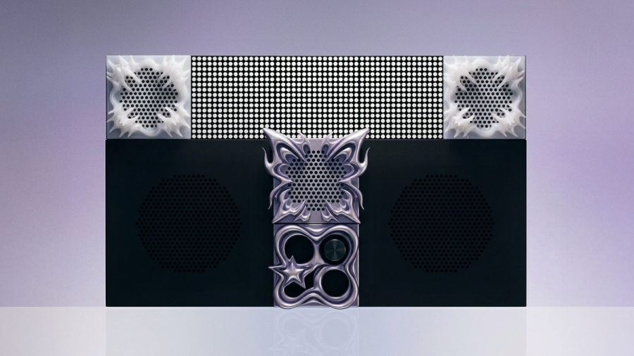
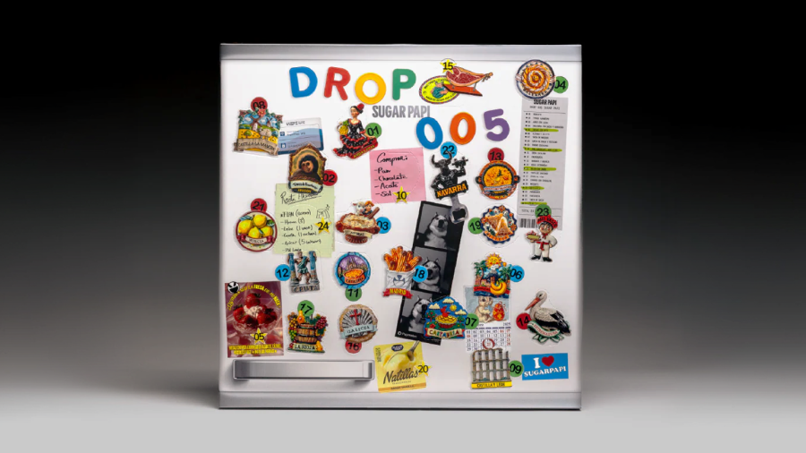
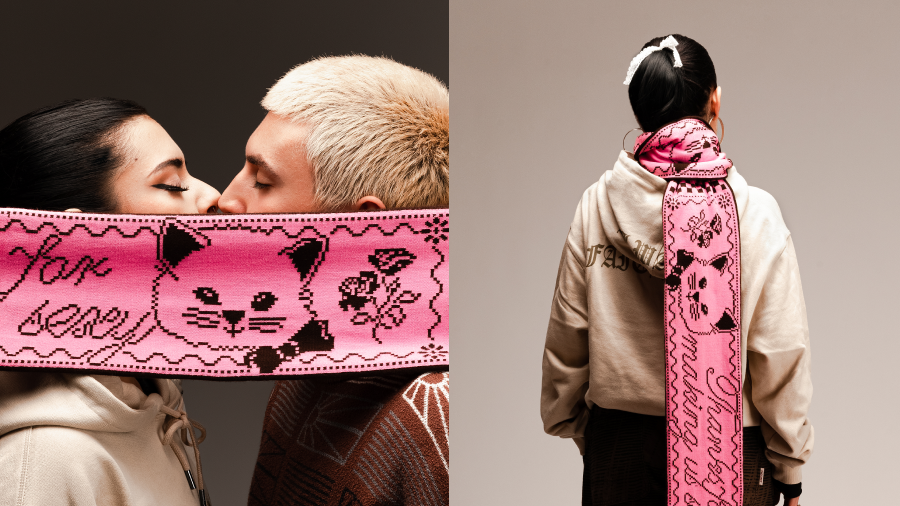

It's Juse! Exploring the intersection of design, culture and technology.
Part of the @spook.club team2026

Sugar Papi - Art Direction, Graphic Design, AI tools.

Designing Valencia's Nightlife. - Art Direction, Visual Identities & Club Culture
Nido - Product, b2c, design system
It's Juse! I'm a multidisciplinary designer with six years of experience in graphic design and art direction, now expanding my practice into digital product and interactive experiences.
My background in visual communication, combined with my recent focus on research, interaction and user experience, allows me to approach complex problems from both a creative and user-centred perspective.
I'm curious, collaborative and always looking for new ways to learn, connect ideas and turn them into clear and meaningful experiences.
Studies
EASD · Master's Degree in Interactive Space Design
UPV · Master's Degree in UX/UI Design
EDI Murcia · Bachelor's Degree in Graphic Design
Experience
Spook Club · Visual designer and Social Media+139 k followers
Sugar Papi · Art Director and Graphic designer+88 k followers
Roto Club · Art Director and Graphic designer+23 k followers
Pizzaclik · Graphic designer+3 k followers
Recognition
Robolot · 2026 · Ponencia
MMMAD · 2021 · 10 Segundos 10 Artistas: Valencia
Recreo Art Book Fair · 2021 · Participación vendiendo un fanzine
CreaMurcia · 2021 · 1er Premio en Artes Visuales
Mu-Tantes · 2019 · Exposición Colectiva
Current toolkit
Adobe Creative Cloud, Figma, Touchdesigner, Visual Code, Midjourney, Krea.